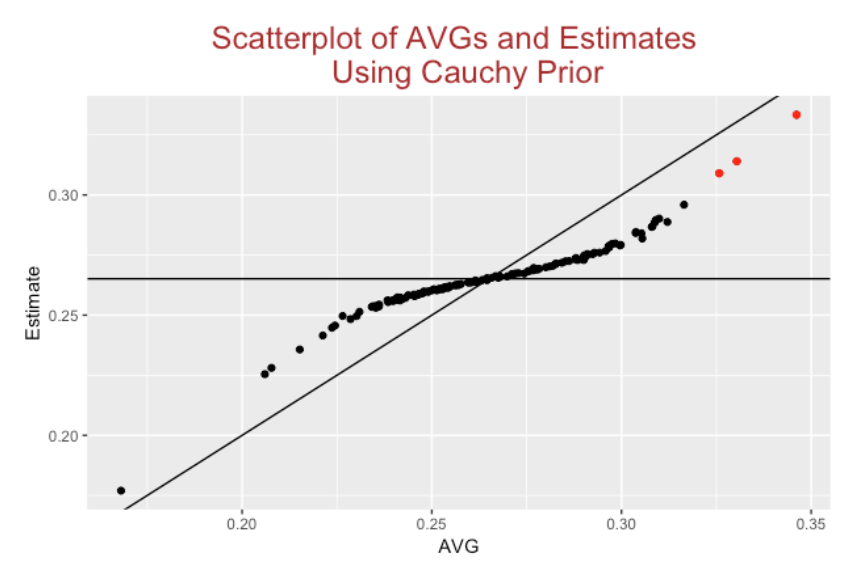

Batting Average
1 Introduction
Here is a collection on posts from the “Exploring Baseball Data with R” blog focused on the batting average.
Section 2 describes how one can represent a batting average components as a function of three component rates and introduces a graphical display of these components.
Section 3 introduces the idea of an expected batting average and Section 4 compares the expected BA with the observed BA and multilevel estimates in predicting future BA’s.
Steven Jay Gould wrote a famous paper on the disappearance of the .400 batting average. We show in Section 5 how one can improve upon a particular graph that Gould presented in his paper.
Another special historical graph is a display of Ted Williams’ batting average in different areas of the strike zone. We describe how to construct similar graphs in Section 6 using the ggplot2 package.
Section 7 explores how the number of .300 hitters has changed over the history of baseball. Since there is a distinction between batting performance and batting ability, we use a multilevel model to estimate the number of “true” .300 hitters between 1969 and 2018.
Section 8 revisits the notion of representing a batting average as a function of the strikeout rate and batting average on balls in play. I agree with Tom Tango that the media should stop reporting the batting average, but the component rates of BA are interpretable.
Section 9 continues this exploration of a batting average in term of the component rates. This post uses a multilevel model to simultaneously estimate the component rates. By use of a new R package, one gets interesting visuals of the performances and associated abilities of these component rates.
2 A Graph of a Batting Average
What does it mean for a baseball hitter to hit “for average”? Here’s an idea how to dissect a batting average and graph its different components, and then use traditional graphics in R to construct this display for a particular player and season of interest.
How does a player gets a base hit? He gets a hit by
- not striking out
- possibly hitting a home run, typically over the fence
- otherwise, he gets a hit on a ball put into play
This motivates the following decomposition of all outcomes of an at-bat (AB). We divide all at-bats first by SO/not-SO, then by HR/not-HR, and then by HIT (in play)/OUT (in play).
If we define the following rates:
- the strikeout rate SO.RATE = SO / AB
- the home run rate HR.RATE = (H - HR) / (AB - SO)
- the balls-in-play batting average BABIP = (H - HR) / (AB - SO - HR)
Then one can show that a batting average AVG = H / AB can be written as \[ AVG = \left(1 - SO.Rate\right) \times \left(HR.Rate + (1 - HR.Rate) \times BABIP\right) \]
Bill James, in one of his Baseball Abstracts, used the area of a rectangle to represent the runs created for a particular player, where the sides of the rectangle represented on-base and slugging abilities. Likewise, we can use areas of shaded rectangles to represent the different components of a batting average.
Here is an outline of this construction. I’m illustrating this construction using Mark McGwire’s famous 1998 season where he had 509 at-bats, 152 hits, 70 home runs, and 155 strikeouts. (We’ll shortly hear about the number of votes McGwire will get for the HOF.)
- Start with a unit square where the horizontal side corresponds to the strikeout rate (0 to 1).
- Draw off a vertical line at Mark’s strikeout rate of 155 / 509 = 0.304. The area of the rectangle is equal to his strikeout rate
- In the “no strikeout” region, draw a horizontal line at Mark’s home run rate 70 / (509 - 155) = 0.197. The area of this “HR” rectangle \[ \left(1 - SO.Rate\right) \times HR.Rate \] represents the first component of the batting average.
- The area of the upper-right rectangle is the proportion of AB where he did not get a SO or a HR. We mark off the balls-in-play hit rate of (152 - 70) / (509 - 155 - 70) = 0.289 with a vertical line.
The area of the “H” rectangle \[ \left(1 - SO.Rate\right) \times \left((1 - HR.Rate) \times BABIP\right) \] is the proportion of AB where Mark got an in-play hit – it represents the second component of the batting average.
- Last, we shade the two type of hits (home runs and in-play) in red and blue, respectively. the sum of the two shaded areas is the batting average: \[ AVG = AREA.OF.RED.REGION + AREA.OF.BLUE.REGION \]
The function plot.batting.average() will construct this graph using traditional R graphics. All is needed is the Lahman package that contains the season batting data for all players and the dplyr package. The inputs to the function are the name of the player in quotes and the season. (If you inspect the function, you’ll see that I use the plot() function to set up the square, lines() functions to draw the segments, and rect() to draw the shaded rectangles.) The graph displays the three rates and gives the areas of the two areas that make up the batting average.
We illustrate this batting average decomposition for several “interesting batters”.
The 1998 Mark McGwire – this is the year when McGwire hit 70 home runs. He had a high strikeout rate of 30%, but he had a remarkable home run rate of 20% and a below-average BIBIP of 29%. (Note that this function is available on my Github Gist site.)
library(devtools)
source_gist("6afd88ed3e48fd62b7b6")
plot.batting.average("Mark McGwire", 1998)The 2001 Mark McGwire. This was the last season of McGwire’s career. His strikeout rate rose to 40%, his home run rate dropped to 16%, and his BABIP rate was a measily 18%. This was a distinctive season since the component of his AVG due to home runs was actually higher than the component due to hits in play.
plot.batting.average("Mark McGwire", 2001)The 2010 Adam Dunn. Adam Dunn is an interesting hitter with a high strikeout rate compensated with a good home run rate and a pretty good BABIP rate.
plot.batting.average("Adam Dunn", 2010)The 2013 Dan Uggla. In this season, Uggla’s had a reasonable home run rate, but his high strikeout rate and low BABIP rate resulted in a 0.179 batting average.
plot.batting.average("Dan Uggla", 2013)The 2004 Ichiro Suzuki. In this remarkable season, Suzuki had a low strikeout rate combined with a high BABIP rate of 40%.
plot.batting.average("Ichiro Suzuki", 2004)
The 1980 George Brett. How did Brett get close to a .400 batting average? He combined a very low strikeout rate with a reasonable home run rate and a strong batting average on balls put in play.
plot.batting.average("George Brett", 1980)The 1941 Ted Williams. The characteristics of Williams’ .406 season was similar to Brett’s. The notable difference was Williams’ high home run rate.
plot.batting.average("Ted Williams", 1941)These graphs shows graphically how players “hit for average” and might be a useful way to compare batters. At least, it might discourage the imprecise way of simply saying that a player “hits for average”. As indicated by these graphs, players who get a high batting average typically have low strikeout rates, and it is possible to boost one’s batting average by hitting home runs (think Mark McGwire).
3 Expected Batting Average
3.1 Introduction to xBA
As defined by Major League Baseball, expected batting average (xBA) is an estimate of the probability that a batted ball is a hit based on exit velocity and launch angle. Since the xBA values are provided with the Statcast data, I had several things to explore:
- Is it possible to replicate the Statcast hit probabilities using a statistical model? (I am thinking of a generalized additive model (GAM) which is a general-purpose good regression method.)
- If there are differences between the Statcast probability estimates and the GAM probability estimates, how are they different?
- How can one compute a expected batting average on all at-bats from the xBA estimates?
- How do the actual number of Hits compare with the expected number of Hits for each player after one month of baseball in the 2018 season?
- Can one improve on the probability of hit estimates using the spray angle measurement?
3.2 GAM Model for Predicting Hits from Launch Angle and Exit Velocity
Using all the in-play data from the 2017 season, I fit the generalized additive model (GAM) of the form
logit(prob(H)) = s(Exit Velocity, Launch Angle)
where \(s()\) is a smooth function of the two variables. (At some late blog post, I’ll explain how a GAM works.)
3.3 Comparing GAM Predictions with Statcast Hit Probabilities
Using this GAM model, I predict the probability of a hit for all batted balls in the first month of the 2018 season. I don’t know how MLBAM computes their probability estimates, but we can compare the two sets of estimates. Here is a scatterplot of the two estimates. On average they seem similar, but there is considerable variation in my GAM estimates for a fixed value of the Statcast estimate.
Looking further, here are parallel histograms of the predicted hit probabilities using the two methods. The Statcast estimates seem a bit more discrete and there are clusters of the GAM estimates about the values 0.30 and 0.75.
Here I explore where the GAM estimates understate the Statcast estimates (blue means the GAM estimate understates the probability of a hit and red means that the GAM estimates overstates the probability) as a function of the two variables. It is pretty clear where in the (launch angle, exit velocity) space the two methods are different.
3.4 Expected Unconditional Batting Averages
For clarification purposes, I think the term “expected batting average” is a little confusing since the Statcast BA estimates are conditional on balls in play. An unconditional batting average is actually
\[ BA = (1 - SO.Rate) \times BABIP \]
where SO.rate is the rate of strikeouts (among AB) and BABIP is the batting average on balls in play. The estimates shown above estimate the true BABIP rate, but we need to also estimate the strikeout probabilities. One reasonable approach is to estimate the SO probabilities using 2017 data (by adjusting them slightly towards the average SO rate) and merge these estimates with the 2018 estimates of the BABIP rates to get estimates of the (unconditional) expected BA’s.
3.5 Hits Minus Expected Hits (Luck) After a Month of Baseball
Using the GAM estimates of the in-play hit probabilities, we are interested if these provide reasonable estimates of the number of Hits for the players in the first month of the 2018 season. By summing all of the expected BA’s over all batted balls, we get an Expected number of hits. We plot the residual
Residual = Hits - Expected Hits
against the number of batting balls below. We see a fan shape appearance – the residuals tend to be larger for players with more batted balls. This is a sample size effect – the count of hits with more opportunities tend to be more variable than the count of hits for more opportunities.
To adjust for the AB effect, it is desirable to compute a standardized residual such as
Z = (Hits - Expected Hits) / sqrt(Expected Hits)
that we plot below.
There are several takeaways from this residual graph. First, practically all of the standardized residuals are between -2 and +2 which is what one typically sees with a reasonable model explaining much of the variation in hit probabilities. Second, 65% of the residuals are smaller than zero, indicating that our GAM model is overstating the probability of a hit – there are fewer hits than expected. Last, there are three “interesting players” with residuals exceeding 2 in absolute value. Carlos Santana (Z = -2.18) and Randal Grichuk (Z = -2.17) have been unlucky in terms of getting hits (fewer hits than expected), and Joey Wendle (Z = 2.04) has been unusually lucky this season (more hits than expected).
3.6 Spray Angle
Our model only uses the launch angle and exit velocity and it would seem that the spray angle would also be helpful in predicting hits. I define an adjusted spray angle so that a negative value corresponds to a ball that is pulled and a positive value corresponds to a ball hit to the same side. I divide the batted ball data into bins by adjusted spray angle and this graph displays the average standardized residual in each bin. We see a clear pattern. Balls hit in the middle of the field tend have negative Z scores – there are fewer hits than expected based on launch angle and exit velocity. In contrast, balls hit in extreme spray angles (smaller than -35 degrees or larger 35 degrees) tend to have positive Z scores – there are more hits than expected. This pattern makes some sense given the traditional fielding positions. The largest residuals correspond to batted balls hit at extreme angles on the opposite side – are these batted balls beating the shift and causing more hits than expected?
3.7 A Better Model
The above residual graph indicates that Adjusted Spray Angle is a relevant input for predicting hits and that motivates trying the GAM of the form
logit(prob(H)) = s(Exit Velocity, Launch Angle, Adjusted Spray Angle)
I tried fitting this model on all of the 2017 batted ball data. My work on this is in its early stages, but it appears that one uses the simple criterion
sum(abs(Hit - Expected BA))
this three variable model does significantly better (on 2018 batted ball data) than both the Statcast and GAM two-variable models in predicting hits. Honestly, the improvement is not that great. 62.6 percent of the residuals are still negative (as opposed to 65% in the two-variable model above). Using this new model, Carlos Santana still has 10.2 fewer hits than expected (with the two-variable model, it was 11.1 fewer hits than expected).
3.8 Takeaways
- The GAM model in predicting hits based on launch angle and exit velocity performs similarly to the Statcast estimation method, but there are notable differences. (I don’t know what method Statcast is using, but I suspect the method is more empirical, say by dividing the launch angle/exit velocity space into small bins and computing the proportion of hits in each bin. I believe the GAM method provides smoother estimates.)
- Although the standardized residuals from the model fit look okay, about 65% of the residuals are negative which means that the probability estimates tend to be too high.
- There is a clear pattern when you plot the residuals against the spray angle indicating that there is a spray angle effect in getting hits. But simply adding spray angle to the model does not provide a big improvement.
- There is much more that can be said about expected batting average. One direction of study is to explore how these expected hit probabilities vary among teams or between pitchers. Perhaps one could measure team defense by use of expected batting averages. Related Posts
I’ve been writing about expected batting averages in recent posts. In this post, I demonstrate there is more to hitting than just launch angle and exit velocities by plotting residuals (such as the Z score above) for two consecutive seasons. In a follow-up post, I focused on the error rates by using these expected BA predictions.
4 Expected Batting Average and Hits Added
4.1 Introduction
Baseball Savant has a collection of Expected Statistics measures based on the Statcast data that has been available since the 2015 season. These measures are based on estimated values of expected \(BA\), \(SLG\), and \(wOBA\) given values of the launch angle and exit velocity measurements. I’ve talked about Expected Batting Average in several posts in the past. Since I think there may be some confusion about how the \(xBA\) is computed, I thought I would describe the computation with an example. But the main purpose of this post is to advocate the use of a new measure which I call Hits Added which may be useful in describing a player’s hitting performance beyond what is predicted on the basis of the launch variables. We describe some of the best and worst player seasons and careers with respect to the Hits Added measure.
4.2 Expected Batting Average
As described on the Statcast Expected Leaderboard, expected outcomes are helpful in measuring the skill in batted ball contact removing the effect of defense or ballpark. Given the launch angle and exit velocity of a batted ball, one estimates the probability of a hit. Accumulating all of these hit probabilities over all balls in play, one computes the expected count of hits xH, and then computes an Expected Batting Average by the formula
\[ xBA = \frac{xH}{AB} \] Let’s illustrate this computation for Juan Soto and Bryce Harper for the 2020 season. Here are the basic count statistics.
For each of Harper’s 150 balls-in-play, we estimate the probability of a a hit. Accumulating these probabilities, one obtains \(xH\) = 57.9 expected hits. Dividing this by his at-bats (\(AB\) = 150 + 43 - 2 - 1 = 190), we get an expected \(BA\) of \(xBA\) = 0.305. For Sota, we obtain \(xH\) = 50.8 and an \(xBA\) value of 50.8 / (126 + 28) = 0.330. Note from the table that the \(xBA\) values are much closer than the \(BA\) values for the two players.
4.3 How Do We Estimate the Hit Probabilities?
If you have been reading my blog, you know that I like to use generalized additive modeling (GAM) as a general method for fitting nonlinear patterns to data. Specifically, I have fit a GAM of the form \[
logit(p(H)) = s(LA, LS),
\] where \(s()\) is a smooth function of the launch angle and exit velocity as implemented in the gam() function in the mgcv package. Statcast uses a different method in its computation of these estimated hit probabilities. I have compared the two estimation methods (for example, see this post) and it appears that the GAM method (using the default number of basis functions in gam()) gives probability estimates that are somewhat inaccurate particularly in the area of (LA, LS) values where hits are likely. So I will use the Statcast estimated probabilities here that are conveniently available as a variable in the Statcast dataset. I think the GAM method will work fine using a larger number of basis functions.
4.4 Hits Added
In a baseball standings, one computes the runs scored and runs allowed for each team and using the Pythagorean relationship, one can compute a Pythagorean expected number of wins. The number of team wins above the Pythagorean expectation is commonly called “Pythagorean Luck”. In a similar fashion, we are interested in learning about the performance of a hitter beyond what is explained by the launch variable measurements. We have the expected hits calculation \(xH\). One is interested in the number of hits the hitter obtains over what is expected – we will call this the “Hits Added” measure:
\[ HA = H - xH. \]
Hits Added is attractive in that it has a clear interpretation in terms of hits – it represents the additional number of hits a batter gets over what would be expected based on his launch angle and exit velocity measurements. In our example, Harper had a hits added value of \(HA\) = 51 - 57.9 = -6.9 and Sosa had \(HA\) = 54 - 50.8 = 3.2. Perhaps Harper had a negative value due to his spray angle (he tends to pull the ball and is easily defended) while Sosa had a positive value due to his speed? (This conjecture invites further study.)
4.5 Standardized Scores
There is a sample size effect here since large values of \(HA\) will tend to be more variable than small values of \(HA\). A standard way to adjust for this sample size effect is to compute the standardized or \(Z\)-score
\[ Z = \frac{HA}{\sqrt{EH}} \]
Most of the \(Z\)-scores will tend to fall between -2 and 2. So extreme values of HA correspond to values of \(Z\) that are either larger than 2 or smaller than -2. I have demonstrated in an earlier post that \(Z\) is meaningful in that it appears to measure a hitter’s ability (through spray angle or speed or something else) to obtain hits. If one constructs a scatterplot of the \(Z\) scores for regular players two successive seasons, say 2018 and 2019, the correlation will be about 0.35.
Here’s a graph of the \(Z\)-scores against the balls in play for hitters in the 2019 season where a smoother has been added to see the pattern. Interestingly, there is a positive trend in the smooth which indicates that the regular players with more BIP tend to have positive \(Z\)-scores. (Their hit counts exceed what would be expected given their launch variables.)
4.6 Best and Worst Hitters in the Statcast Era
Now that we have six seasons of Statcast data (2015 through 2020), I thought it would be interesting in finding the best and worst player-seasons with respect to hits added. In addition, it would be interesting to find the hitters who had the highest and lowest cumulative hits added during the Statcast era.
Focusing on hitters with at least 200 BIP in a season, I found 51 player/seasons where the standardized score \(Z\) exceeded 2. The number of hits added for these seasons ranged from 15 to 53 with a median of 25. Dee Gordon had three extreme seasons and nine hitters (Xander Bogaerts, Jose Altuve, Jean Segura, Ender Inciarte, Jonathan Villar, Odubel Herrera, Kris Bryant, Eddie Rosario) each had two extreme seasons. At the low end was only one player/season (Ryan Howard in 2015) where the standardized score \(Z<−2\).
It would also be interesting to see which players gained and lost the most hits over the entire Statcast era (2015 - 2020). Here is the top 10 list – note that Xander Bogart, Dee Gordon and Jose Altuve stand out.
Here is the bottom 10 list – Albert Pujols lost the most hits (beyond what would be expected in terms of launch variables). Googling “Albert Pujols slow”, I found this article that claims that Pujols was the slowest player in MLB in 2017.
4.7 Pitcher Perspective?
This entire exercise above was done from a hitter’s perspective. The obvious question is whether it is useful to consider the use of the \(Z\)-score for pitchers. So I repeated the above exploration for pitchers during the Statcast era. Here are some findings.
When one constructs a scatterplot of the \(Z\)-scores for pitchers for successive seasons, one sees little association (\(r\) = 0.04). This graph suggests there is little evidence that pitchers have the ability to control hits beyond what is predicted based on the launch variables.
Looking for extreme pitcher-seasons, I only found only 8 extreme high and 2 extreme low Z-scores. From a pitcher’s perspective, low is good and they corresponded to Daniel Mengden and Michael Wacha.
Also I looked for cumulative hits added among pitchers in the Statcast era. The best pitcher from a \(HA\) criterion was Julio Teheran who saved 44 hits over the six-season period. The worst pitcher was Matthew Boyd who added 73.4 hits over the Statcast period.
In summary, the hits added or subtracted values for pitchers were much smaller than the corresponding values for hitters. Of course, pitchers have some control over launch angle, but beyond the launch variables, it doesn’t appear that pitchers have much control on the Hit/Out outcome.
4.8 Some Takeaways
A Better Measure? Looking at the Statcast Leaderboard, I don’t think the definition of xBA is that meaningful since one is dividing the expected hits by AB. (I think it would make more sense to divide xH by BIP.) I think the Hits Added measure is easier to understand since we are focusing on the count of hits.
How to Estimate the Hit Probabilities. It was surprising that GAM provided poor estimates at hit probabilities, but perhaps (as Tom Tango) suggested, it is due to the nature of the (LA, LS) region which is likely to result in a hit.
HA is a Batter Characteristic. I showed in an earlier post that the variability in launch speeds or hit rates is primarily due to differences between batters than differences between pitchers. Similarly, hits added appears to be more a measure of hitting ability rather than pitching ability. Hitters who are able to direct their balls in play or have good speed will likely have positive HA values.
5 Predicting AVG using XBA and a Multilevel Model
5.1 Introduction
I’ve been doing some exploring of batting data for the 2017 season, trying to better understand the advantages that the Astros hitters may have had by stealing signs. In the process, I thought it might be better to work with expected batting average (xBA) rather than batting average (BA) since it is more stable and reflective of a player’s hitting ability. That brought up a interesting side question – how much better is xBA than BA in prediction? And how does xBA compare with my favorite statistical method – multilevel modeling – in predicting future BA? This post is devoted to exploring this side question.
5.2 The Prediction Problem
Let’s pose the prediction problem. Suppose we divide all of the ball-in-play events in a particular season randomly into two equal parts – we’ll call one part the Training data and the second part the Test data. We are interested in using players’ in-play batting averages in the Training dataset to predict their in-play batting averages in the Test dataset. (We’ll focus this prediction for non-pitchers who have a reasonable number of balls in play.) We describe several ways of making these predictions.
5.3 Using the In-Play BA
The obvious thing to do is to use a player’s BA on balls in play in the Training data to predict his BA in the future Test data. The problem is that this in-play BA is a type of batting measure that has a large “luck” component and it really does not do a good job in predicting future performance. Okay, the current BA is crummy in prediction – can we do better?
5.4 Using the Expected BA
Recently there has been a lot of attention in using launch variables such as launch velocity and launch speed to develop a better measure of batting ability. Suppose we use our Training data to fit a model of the form
\[ Prob(Hit) = s(LS, LA) \]
where \(s()\) is a smooth function of the launch velocity and launch angle. If we do this, we obtain an estimate of a batter’s hit probability for any values of the launch variables. If one sums these hit probabilities over all batted balls for a given player, one gets the Expected BA (xBA). Since the launch variable measurements are believed to be more reflective of ability rather than chance, one believes that these xBA values will be better in predicting future BA performance in the Test data than the raw BA values.
On a side note, I think that Expected BA statistics are helpful in many contexts. For example, here is a graph showing how the xBA measure depends on the count (2017 season data).
5.5 Using a Multilevel Model
The use of Expected BA is attractive since it is using additional information, namely the launch velocity and launch angle measurements. But there is a simpler method that focus on the simultaneous estimation of a set of batting abilities. We ignore the launch variables and just fit an exchangeable model to the set of hitting probabilities. The number of hits in play \(y\) is assumed to follow a binomial distribution with probability of hit \(p\). The set of hitting probabilities \(p_1, ..., p_N\) are assumed to follow a common beta curve with shape parameters \(a\) and \(b\). The beta parameters \(a\) and \(b\) are assigned weakly informative distributions. Given hitting data for a group of a players, this model is quick to fit, and it provides estimates for the batting probabilities that can be used to predict the BA in the future test data.
5.6 A Prediction Contest – Which Method Does Best?
Okay, here is a simple experiment to show how these three prediction methods perform. I’m using 2017 data, although this procedure can be applied for any season data.
In 2017, we have 126,625 batted ball plays excluding sacrifices. I randomly divide these plays into a Training dataset of 63,312 batted ball plays and a Test dataset of 63,313 plays. By randomly dividing the BIP, I am avoiding any effect due to the month of the season.
I use a fitted GAM model (binomial sampling, logit link) to compute the estimated probability of a hit for all values of the launch variables for the Training dataset.
I focus only on the players who have at least 100 balls in play in both the Training and Test datasets – there are 276 players in this group.
For each player using the Training data, I have three different predictions of his BA performance in the Test dataset: (1) the Observed BA, (2) the expected BA (xBA), and (3) the estimate of his hitting probability from the multilevel model.
I evaluate the prediction performance by computing the sum of squared prediction errors – the lowest value is best.
Here are the results of my prediction contest. We see that the multilevel predictions are best, followed by xBA and BA.
5.7 What Have We Learned?
If you try to replicate my experiment you will get slightly different results since I am randomly dividing the 2017 data into Training and Test parts. (Actually I provide the random number seed so you can replicate this work.) Even if you don’t use my random number seed, you’ll discover the following main results:
The poorest estimate of future BA is the observed BA which is not surprising. One really can’t take a batting average very seriously if you are interested in predicting future performance.
Both the Expected BA and Multilevel Model estimates give better predictions than the naive BA estimate, but the multilevel estimates are clearly the best.
This is a bit surprising since no information about launch conditions is being used in the multilevel model estimates. Basically, the multilevel model estimates shrink the raw BA’s towards an overall average, where the degree of shrinkage depends on the luck/skill characteristics of the batting measure. (For a batting average, you’ll get a relatively large degree of shrinkage since BA has a large luck component.)
5.8 Some Comments
Value of Expected BA. I don’t want to sound too critical of expected BA. Researchers have understood that BA’s are pretty unstable and and using additional information in the launch conditions will lead to better predictions of BA.
Multilevel Modeling. I hope this simple exercise will help to convince the reader of the value of multilevel modeling. This is an intelligent way of combining information from different sources and is especially relevant for baseball data. It is difficult to understand patterns when one has a limited amount of data for individual players and one has to combine data for many players to understand the underlying behavior of baseball measures. Here is one of my posts where I describe multilevel modeling to estimate batting abilities for Efron and Morris’ famous example.
Can We Do Better? Actually, we can. I think a better method (than the ones proposed above) would be to first model the probability of a hit as a function of the launch variables (a regression model), and then use multilevel modeling to reflect the belief in similarity of the individual regression models. Using this, I think we could even get better predictions of future BA.
Got Code? On my Github Gist site, I show Markdown code for implementing this prediction exercise. I use Statcast data for the 2017 season, the
mgcvpackage is used for doing the GAM fitting, and the multilevel model fit is done using myBApredictpackage.
6 Redrawing Steven Jay Gould’s Graph
The late Harvard paleontologist and baseball fan Steven Jay Gould wrote a famous study on the disappearance of the .400 batting average in baseball in his book Triumph and Tragedy in Mudville: A Lifelong Passion for Baseball. Essentially his argument was that (1) the variation in batting averages among “regular” players has showed a steady decrease over time, (2) great hitters are moved towards the average due to this smaller variation, and so (3) it is harder to get a .400 average.
Gould used a graph to show the decrease in the standard deviation of batting averages over time. Michael Friendly has discussed the problems in Gould’s graph and shown an improved graph. Since I’m currently teaching principles of statistical graphics, I thought it would be helpful to show how one can use the Lahman package together with the dplyr and ggplot2 packages to replicate Gould’s display and an improved one.
First we start by collecting the number of hits, at-bats, walks, hit-by-pitches, and SFs for all players and seasons from the Lahman Batting data frame.
library(Lahman)
library(dplyr)
library(ggplot2)
S <- summarize(group_by(Batting, yearID, playerID),
H=sum(H), AB=sum(AB),
BB=sum(BB), HBP=sum(HBP, na.rm=TRUE),
SF=sum(SF, na.rm=TRUE))We say that a player is “regular” if his minimum number of at-bats is 3 x the.number.games.in.season. We find this min.AB for all seasons from the Teams dataset, merge this data frame with the Batting data frame, and use the filter() function (from the dplyr package) to restrict attention to player/seasons that exceed the minimum number of AB.
ST <- summarize(group_by(Teams, yearID),
Games = round(mean(W + L)),
min.AB = 3 * Games)
S2 <- merge(S, ST, by="yearID")
S.regular <- filter(S2, AB >= min.AB)We use the summarize() function again to find the standard deviation of the batting averages and the standard deviation of the on-base percentages for all seasons.
SD.data <- summarize(group_by(S.regular, yearID),
SD.AVG = sd(H / AB),
SD.OBP = sd((H + BB + HBP) / (AB + BB + HBP + SF)))We replicate Gould’s graph from his book using ggplot2 graphics. This graph is hard to read, and it really is ineffective in communicating Gould’s main point that the standard deviations are decreasing over time.
ggplot(SD.data, aes(SD.AVG, yearID)) + geom_point() +
xlim(.005, .075) +
ggtitle("Standard Deviations of AVG of Regulars (Gould's Display)")We draw this in a more standard way where the horizontal variable is season and the vertical is standard deviation. To help see the pattern, I add a smoothing curve. The message from this graph is that the standard deviation of the AVGs has stayed constant in recent seasons.
ggplot(SD.data, aes(yearID, SD.AVG)) + geom_point() +
geom_smooth(se=FALSE, span=0.35) +
ggtitle("Standard Deviations of AVG of Regulars")What if we considered a different batting measure? Specifically, how has the spread in on-base percentages changed over time? In contrast to the AVG, the standard deviations of the OBPs seemed low in the 1980’s, higher in seasons around 2000, and the SDs appear low in recent seasons.
ggplot(SD.data, aes(yearID, SD.OBP)) +
geom_point() + geom_smooth(se=FALSE, span=0.35) +
ggtitle("Standard Deviations of OBP of Regulars")This interesting pattern of OBP sd’s probably deserves more study. For example, how has the spread of the OBPs of the first batter in the lineup changed over time? Are there other variables (such as strikeout rates) that might impact the spread of the OBPs? Generally, it would be interesting to better understand the reasons for the changes in variation over time.
7 Construct Heat Maps for AVG
Williams and Underwood’s famous book The Science of Hitting (originally published in 1970) contains the following remarkable graph that shows Ted Williams’ batting average in different areas of the strike zone. (I wonder how this data was collected over 45 years ago?)
In this blog post, I’ll provide a general overview of how to construct a similar graph using the ggplot2 package with pitchFX data, and use that as a springboard to present alternative graphical views of areas of “hot” and “cold” hitting.
7.1 The Data
Using the pitchRx package, I downloaded pitch data for five months of the 2016 season. I create a data frame with the variables gameday_link, num, Batter, X, Z, and Event. For my purposes, all I need is the name of the batter, the pitch location (X and Z) and the Event. Actually, the data frame only contains information on the last pitch in each plate appearance, since I’m interested in the relationship between the location of the final pitch and the PA outcome.
7.2 Mike Trout
Here are the steps to produce a “Williams/Underwood” style of graph for Mike Trout’s batting average in the 2016 season
- Restrict the events to only official at-bats (remove walks, etc) and define a
Hitvariable which is 1 for a hit and 0 for an out. - Since we have a limited amount of AB for Trout for the 2016 season, some smoothing of the probabilities is desired. I fit a generalized additive model with a logistic link (using the
gam()function) to the 1/0 data using the (X, Z) location as covariates. - I define a grid of
X, Zvalues similar to what was used in Williams and Underwood’s display. For each value, I estimate the hit probability and useggplot2to display the fitted averages on top of the points.
7.3 A Contour Plot
Although the above graph is nice, it is hard to detect the sweet spot (actually Williams and Underwood used different colors to help the reader find the hot zone). But if one uses a finer grid of points, say 50 by 50, we can create alternative displays that better communicate hot and cold zones.
One possibility is a contour plot. Here I construct a contour plot (using the geom_contour() function) specifying contour lines at .2, .3, and .4. For a pretty large area in the middle of the strike zone, Trout is a .400+ hitter.
7.4 Categorizing AVG
If we are really interested in ranges of batting averages, then a reasonable thing to do is to create a new variable that categorizes the AVG into the intervals (0, 100), (100, 200), etc, and then plot the categorized values using different colors.
7.5 Celebrating the Cubs with Heat Maps
One of my colleagues mentioned heat maps and R in the same sentence (he prefers MATLAB so it was notable that he mentioned R). It is straightforward to create heat maps of AVG over the strike zone using the geom_tile() function. In honor of the Cubs clinching a playoff spot, I show heat maps for two right handed hitters, Kris Bryant and Addison Russell, and two left-handed hitters Anthony Rizzo and Chris Coghlan. Remember that these graphs are from the catcher’s perspective. It is interesting that all of the hitters seem to like balls in the middle and outside of the strike zone (for the righties, outside is on the right, and for lefties, outside is on the left).
7.6 Things to Try
Hopefully this post has gotten folks interested in trying these displays. Here are some directions for future work.
- Instead of hit/out, one could define a success as hitting a home run, and see the sweet spot for hitting a home run for different batters.
- Or one could measure the value of a PA by the run value and look at contours of run value by the location of the last pitch
- Since Statcast provides the exit velocity for each ball, it would be interesting to look at contours of exit velocity of balls-in-play by pitch location. How does a batter’s sweet spot vary by the arm of the pitcher?
7.7 R Code
A function heat_plot() that will produce this type of heat graph can be found at my Github gist site. The inputs are the name of the batter, the data frame containing the pitchRx data, and an indicator if you want to see probability of a hit or the probability of a home run.
8 The Vanishing 300 Batting Average
8.1 Introduction
When one thinks of a great offensive hitter, several measures come to mind such as the count of home runs, on-base percentage, or a batting average. For example, the number 61 will always be associated with Roger Maris’s HR total in the 1961 season, and .406 is associated with Ted Williams’ AVG in 1941. We likely won’t see a .400 AVG again, but the .300 AVG is still valued by modern players. Given the current decline in baseball hitting, that raises several questions. How common is a .300 AVG hitter? Specifically, how has the number of .300 hitters changed in the last 50 years of baseball? After we address this issue, we’ll look more carefully at the distribution of all qualifying AVGs of hitters for the last 50 years. (Spoiler alert: there are some interesting deviations from a normal curve.) By the way, 1969 seemed to be a good starting point for my investigation, since 1968 was the “year of the pitcher” when the AL batting crown was won by Carl Yastrzemski with a mere .301 AVG.
As you probably know, I make a big distinction between batting ability and batting performance. A player may get 30 out of 100 AB so his batting performance is AVG = 30 / 100 = .300. But that doesn’t mean that the player’s batting ability, that is, his chance of getting a hit in a single AB is .300 or higher. (In fact, I’d doubt this player really is a .300 ability hitter since his .300 performance is based on only 100 AB.) In the last part of this post, I’ll use a random effects model to estimate the hitting probabilities of all qualifying batters in a season. By using these batting ability estimates we can explore the number of true .300 hitters in the MLB in the past 50 seasons.
8.2 Number of Qualifying 300 Hitters
First, using the Lahman database, we find the number of .300 hitters in each season. We restrict attention to qualifying hitters who have at least 3.1 *G plate appearances where G is the number of games played in a season (this is usually 162 with the exception of several strike-shortened seasons). Here’s a plot of the number of .300 hitters. This number ranged between 15 and 30 from 1969 through 1990, and the number dramatically increased to 40-50 in the years 1990 through 2000. Since the 2000 season, the number of .300 hitters has been in free fall mode – there were 14 of these hitters in the 2018 season.
8.3 Exploring all Qualifying AVGs
After constructing this graph, I was interested in looking more carefully at all qualifying AVGs for the past 50 seasons. I rounded each AVG to three decimal places and I’ve plotted the count of each possible AVG below.
Since the shape looks pretty symmetric, it motivates fitting this distribution with a normal curve. I’ve added a normal curve with mean 0.278 and standard deviation 0.027 to the plot.
8.4 Deviations from Normality
How do these AVGs differ from normality? It is hard to tell from the above graph. But for each AVG value, I can compute the Pearson residual defined by
\(R = \frac{Observed - Expected}{\sqrt{Expected}}\)
If the normal model is suitable, one expects these residuals to fall between -2 and 2. A graph of the residuals is shown below.
Several interesting things to observe:
The number of .299 batting averages is unusually low and the number of .300 AVGs is unusually high (relative to the normal curve fit). This shows the importance of a .300 AVG. I suspect that players may get bonuses by getting a season .300+ AVG and the manager may bench a player on the last day of a season so he can keep his .300 AVG. Whatever the reason, a .300 AVG appears to have a special meaning.
Another thing we notice is that the normal curve does a poor job in predicting low AVGs (like Chris Davis’ recent .168 AVG) and high AVGs (like Mookie Betts’ .346 and the other high AVGs in this period). Really the normal curve is not suitable for batting averages – the distribution of observed AVGs tends to have flatter tails than the normal.
8.5 Estimating the Number of True 300 Hitters
As I mentioned earlier, I am interested not in the number of .300 hitters, but in the number of hitters whose batting probability exceeds .300. To find this number, I need to fit a model to season hitting data to estimate the hitting probabilities for all players. Here is one common statistical model for accomplishing this: first one assumes that the number of hits \(y_j\) for the jth player is binomial(\(AB_j, p_j\)). Then one assumes the logit probabilities logit \(p_1\), …, logit \(p_N\) are normal with mean \(\mu\) and standard deviation \(\tau\). The second-stage parameters \(\mu\) and \(\tau\) are unknown and assigned a weakly informative prior.
I am going to make one adjustment to this random effects model. I am going to assume the logit probabilities are distributed from a Cauchy density (instead of a normal) with unknown location and scale parameters. This adjustment will impact the hitting probability estimates, especially for outlying AVGs. (We saw above that batting averages tend not to be normally distributed. Likewise, I don’t believe hitting probabilities are normally distributed and the Cauchy density allows for more flexible distributions of hitting probabilities.)
I am not going to describe the JAGS fitting procedure here. But below I graph the observed AVGs against the probability estimates for all 2018 players. For players with AVGs close to the middle of the distribution, the estimates will shrink or adjust the observed H / AB towards the middle AVG. But for extreme AVG players like Chris Davis and Mookie Betts, the degree of shrinkage is much less. Basically, we are treating these outliers differently – we see these .168 and .346 AVGS as special and we only perform modest shrinkage towards the mean.

In the above graph, I label with red the points corresponding to players with estimated hitting probabilities greater than .300. In the 2018 season, we had 14 players with observed AVG exceeding .300 but we only estimate that 3 of them had true AVGs exceeding .300.
I repeat this fitting procedure for each of 50 seasons and graph the number of true 300 hitters (that is, the number of players with .300+ estimated hitting probabilities). In the early seasons, the number of true 300 hitters was on average 5, it climbed to 15-25 in the 1995 - 2000 seasons, and is on a downward trend in recent seasons. I would not be surprised if this number approaches zero in a few seasons.
8.6 Closing Comments
Here are some general takeaways or themes in this discussion.
What is a .300 batting average? This post has shown that a meaning of .300 batting average really has changed through the history of baseball. In the 2000 season, a .300 AVG was relatively common and currently it is pretty rare. Will the .300 AVG disappear?
Baseball heros. To remain a popular sport, baseball needs its heros, and these heros are defined by statistics such as HR, AVG, ERA, etc. If our benchmarks for excellence such as a .300 AVG are not reachable, then will it be harder to recognize a great hitter? I know that a batting average is a relatively weak measure of hitting performance, but it still will be used to measure hitters for many seasons to come.
Distribution of baseball talent. One side question of interest is “how is baseball talent distributed?” I believe that batting averages tend to be roughly symmetric, but there are interesting deviations from normality especially at the high end. Perhaps one can define a Hall of Famer as a player that truly stands out using some meaningful measure of performance.
Random effects models. Although we observe baseball performance such as 100 hits in 300 AB for a .333 AVG, we are most interested in a player’s ability such as a hitting probability since his talent is most predictive of future performance. These random effects models like the ones illustrated above are a good way of estimating talent.
9 Making Sense of a Batting Average
9.1 Introduction: A Twitter Post
Last week, Tom Tango posted an observation on Twitter from watching the first game of the World Series.
In this post Tango was making a sarcastic comment about the batting average AVG that is well-known to be a poor measure among sabermetricians of the quality of a hitter. But I suspect that the media will continue to show a player’s AVG. Instead of just criticizing the AVG, why don’t we try to get a better understanding of this traditional batting measure? Here I’ll review my perspective of a batting average that decomposes AVG into two parts. Although I agree that the batting average by itself isn’t currently that informative or interpretable, we’ll see that the components of AVG are helpful in understanding the batter’s abilities. Note that I am using the word ability – an estimate at a batter’s ability can be very different from the batter’s actual performance. (I’ll contrast measures of performance with estimates of ability below.)
9.2 A Batting Average is the Product of Two Rates
Write the batting average as the product
\[AVG = \frac{H}{AB} = \left(1 - \frac{SO}{AB}\right) \frac{H}{AB - SO}\]
The first term \((1 - SO / AB)\) is the rate of putting the ball in play (that is, not striking out).
The second term \(H / (AB - SO)\) is the batting average on balls in play.
If we decompose the batting average this way, we learn about a batter’s strikeout rate and also about his success in balls put into play.
For example, let’s compare the top two AVG hitters during the 2020 season:
Name In_Play_Rate H_Rate AVG
1 DJ LeMahieu 0.892 0.408 0.364
2 Juan Soto 0.818 0.429 0.351DJ LeMahieu was better than Juan Soto in terms of putting balls into play, but Soto was better in getting hits on balls in play. If you present LeMahieu’s AVG as, say 0.364 (= 0.892 \(\times\) 0.408), this provides some insight into LeMahieu’s batting performance. He seems to be effective in putting the ball into play since his in-play rate is close to 90%. This is especially notable in the 2020 baseball environment where strikeouts are pretty common.
9.3 Scatterplot of Component Rates
Here’s a scatterplot of the component rates for the 2020 regular players. I have added lines corresponding to specific batting averages and I have represented LeMahieu’s and Soto’s performances by red points. Note the wide spread both in the in-play and hit-on-balls-in-play rates and the little relationship between the two rates.
9.4 Scatterplot of Component Talents
One has to be careful in making sense of the above scatterplot since we had a shortened 2020 season and chance variation can play havoc on batting measures. One way to screen out the large binomial variation is to fit a random effects model to the collection of balls-in-play rates and fit the same model to the collection of BABIP rates. When you fit these models, the observed rates will be adjusted towards an average, and the degree of adjustment depends on the batting measure. The model estimates provide estimates at the batters’ talents that are better predictors of future performance than the observed rates. Here is an older post that describes the use of this random effects model to shrink batting averages.
I’ve graphed a scatterplot of the estimated component talents using the same scale so we can easily compare the two scatterplots. (Again the red points correspond to the talents of LeMahieu and Soto.). The in-play rates are strongly driven by talent, so these model estimates adjust the observed in-play rates a small amount towards the average. In contrast, the BABIP rates are more “chancy” and the observed rates are shrunk strongly towards the average for these estimates. Although a few players had batting averages exceeding .350, the highest BA talent (DJ LeMahieu) was only .317.
Let’s revisit our two hitters by comparing their component talent estimates. Here we get a different message. The two players have very similar BABIP talents, but LeMahieu clearly is better in putting balls in play. LeMahieu has a 317 - 294 = 23 point advantage in batting average talent (actually the hitting probability estimate) which exceeds his 364 - 351 = 13 point advantage in observed batting average.
Name InPlay_Talent BAIP_Talent Talent
1 DJ LeMahieu 0.869 0.364 0.317
2 Juan Soto 0.805 0.365 0.2949.5 Takeaways
Can we make sense of a batting average? There was a time in the past when a statement of a batting average was meaningful. For example, since Tony Gwynn rarely struck out, his .394 AVG in the 1994 season was interpretable. Gwynn’s .394 AVG reflected his remarkable success in getting hits on balls in play. (If Gwynn was playing today, I doubt that defenses would shift against him since Gwynn had the ability to hit to all fields.) In 2020 baseball AVG confounds two batting abilities – the ability to not strike out and the ability to get a hit on a BIP – so I don’t know how to interpret, say a .300 AVG. Since it is hard to make sense of the batting average, so one might question why media like to report this measure. But as explained here, the components of BA are interpretable.
Will Fox Sports will replace AVG with something else? I guess the first step for Fox Sports or other networks is to replace AVG with a more meaningful or interpretable measure of batting performance. Probably the most obvious replacement would be the pair of measures OBP and SLG which can be combined by addition in the OPS measure. Although my component measures for AVG are somewhat intuitive, they are not that familiar to fans.
What Does FanGraphs report? These component measures for AVG are similar but not the same as the ones that FanGraphs reports on their hitting leaderboard. They have a K% (K percentage) that is the percentage of strikeouts in all plate appearances, while in my definition I divided SO by AB. The standard definition of BABIP is (H - HR)/(AB - K - HR + SF) which removes home runs and adds SF to the denominator.
Actually There Are Three Component Rates in a Batting Average. In my earlier work such as in this post and this paper, I wrote a batting average as the function of three rates:
\[ BA = (1 - SO.Rate) \times (HR.Rate + (1 - HR.Rate) \times BABIP) \]
where \(SO.Rate = SO / AB\), \(HR.Rate = HR / (AB - SO)\) and \(BABIP = (H - HR) / (AB - SO - HR)\). Since home runs are so prevalent, this decomposition can provide additional information about a batter’s home run ability and his ability to hit on a ball in play.
10 Learning About Batting Ability Using Components of Batting Average
10.1 What is a Batting Average?
I know most baseball analysts don’t like a batting average since it isn’t a helpful measure of batting performance. But I think a batting average can be useful if it is expressed into components that involve strikeouts, home runs, and getting a hit on a ball in play. Here I focus on learning about batters’ hitting abilities and use a random effects model to learn about the ability aspects of the components of batting average. In this exercise, I illustrate the use of a new R package ggdensity that provides useful graphical displays of bivariate data.
10.2 Components of Batting Average
Here is a decomposition of a batting average – using some algebra, one writes the batting average as
\[BA = \frac{H}{AB} = (1 - SO.Rate) (HR.Rate + (1 - HR.Rate) BABIP)\]
where
\(SO.Rate = \frac{SO}{AB}\) is the strikeout rate
\(HR.Rate = \frac{HR}{AB - SO}\) is the rate of home runs on balls put into play
\(BABIP = \frac{H - HR}{AB - SO - HR}\) is the rate of hits on balls put into play in the ballpark
It is not helpful to talk about a player that “hits for average” since it is hard to understand the characteristics of the hitting talent that corresponds to, say, a .300 batting average. But I think it is advantageous to talk about batting ability using the components strikeout rate, home run rate, and BABIP. Strikeout rate relates to a player’s plate discipline and ability to make contact with the pitch and home run rate is a measure of a player’s slugging ability. One player might have a .320 batting average because he tends to put the ball in play (that is, a low strikeout rate) and has a high hit rate on balls put into play. In contrast, Aaron Judge’s current .310 average is likely a by-product of his high home run rate. We currently use slash stats (AVG / OBP / SLG) to describe a player’s hitting. Similarly it would seem reasonable to use another set of slash stats (SO.Rate / HR.Rate / BABIP) to describe the components of a player’s batting average.
10.3 Estimating Component Abilities
I collected the SO.Rate, HR.Rate and BABIP for each batter with at least 100 AB in the 2021 season. Let \(\alpha_j, \beta_j, \theta_j\) denote the SO and HR and BABIP probabilities for the \(j\)th batter in my dataset.
Each batter has three associated probabilities. I convert each probability to a logit – let \(\gamma_j = (\alpha_j, \beta_j, \theta_j)\) denote the vector of logits for the \(j\)th player. Assuming we have N players, we assume that the batter vectors \(\gamma_1, ..., \gamma_N\) come from a multivariate normal distribution with unknown mean vector \(\mu\) and variance-covariance matrix \(\Sigma\). Then the parameters \(\mu\) and \(\Sigma\) are assigned weakly informative prior distributions.
I fit this model to our 2021 season data. I won’t go into the details of the estimation procedure here. I used JAGS and the runjags package to fit this model by Markov chain Monte Carlo. Using the simulation output, I estimated the SO, HR and BABIP probabilities for all players.
10.4 Graphs
We compare the observed SO, HR and BABIP rates (on the logit scale) with the estimated logit probabilities for all players using the multilevel (random effects) model.
Here is where we are applying the ggdensity package. When one visualizes distributions of two variables, then standard contour maps, say using the geom_contour_filled() function in ggplot2, are pretty but hard to interpret. The ggdensity package offers an attractive alternative – the function geom_hdr() is a replacement for the ggplot2 function geom_contour_filled() that shows regions of highest probability content. By default, it will show one region containing 50% of the values, another region containing 80% of the values, and two larger regions showing respectively 95% and 99% of the values.
Here we use these new contour graphs to display side-by-side scatterplots of the observed strikeout and home run rates (right) and the estimated strikeout and home run probabilities (left). Note several interesting things:
To interpret these contours, note that 50% of the rates occur within the yellow region and 80% of the rates fall within the green region.
Comparing the Observed and Ability graphs, we see these fitted models for ability essentially shrink or adjust the observed rates towards the average. That is, the model estimates adjust the extreme home run rates and strikeout rates towards the average rates for all hitters.
When one looks at the scatterplot of the observed rates (right graph), one sees a small positive relationship between the two rates. In contrast, there is a relatively strong positive association between the strikeout rate and the home run rate ability estimates (left graph). This means that batters who strike out a lot tend to hit home runs at a high rate.
Here are scatterplots of the observed and estimated SO and BABIP rates (first graph below) and the HR and BABIP rates (second graph below). Note that the BABIP ability estimates adjust the observed rates strongly towards the average. This is in contrast to what happens to the SO rates or the HR rates – for these rates there is a smaller adjustment of the observed rates towards the estimated ability rates. The takeway is that the strikeout rates and home run rates reflect the different player talents. In contrast, the differences in the observed BABIP rates reflect chance variation rather than meaningful differences in hitting abilities.
10.5 Using the Model to Predict
One use of this model is to predict future batting performance. For example, since this model was based on 2021 season data, one can predict strikeout rates, home run rates and BABIP rates for the 2022 season. Suppose you have a player with a low strikeout rate, low home run rate and a high BABIP rate in 2022. Looking in the future, since strikeout rates and home run rates are ability-driven measures, I would anticipate small changes in these rates in a future season. In contrast, since BABIP rates are chance-driven, I would anticipate the high BABIP rate in in 2021 to drop close to the average BABIP in 2022. These type of predictions would be made automatically by simulating draws from the posterior predictive distribution.
10.6 Closing Remarks
Some years back I wrote a paper published in Journal of Quantitative Analysis of Sports on the estimation of batting average components. Since this journal has limited access, here is a arXiv version of the paper. The difference in the approach taken here is that I am assuming a multivariate normal prior on the component probabilities. This makes sense since I believe there is some positive association between a home run probability and a strikeout probability.
I’ve written about these BA components in older posts. For example, here is a post where I focus on the the in-play rate 1 - SO / AB and the hit on all balls in play rate H / (AB - SO).
The
ggdensitypackage provides two useful functionsgeom_hdr()andgeom_hdr_lines()that are easy to use (just replace theggplot2geoms with these functions) and provide helpful interpretation for paired data. In addition, for a Bayesian, they provide useful interpretations of bivariate distributions of two parameters from simulation output.